Manifiesto Analógico
La fotografía analógica supone un medio a través del cual pre-
tendo garantizar la ausencia de manipulación posterior al disparo de la
cámara.
Fotografío situaciones representativas del momento político y social del mundo
contemporáneo. En ocasiones el retrato acentúa el contraste que mi obra tiene
con las imágenes que recibimos de los medios.
Busco crear empatía, una catarsis nueva para el espectador sobre un drama que ya
conoce.
Éstas son algunas de las fotografías que forman parte de mi proyecto Migraciones.
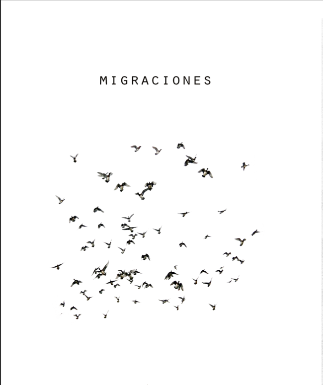
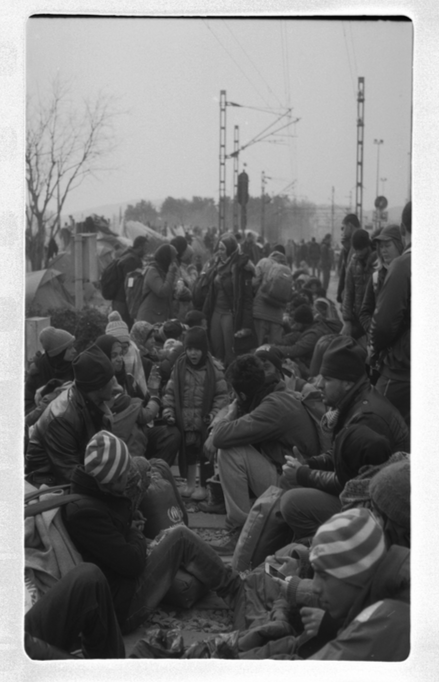
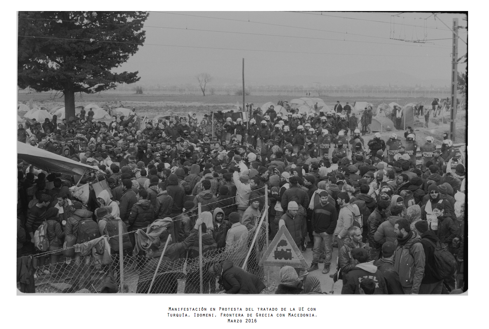
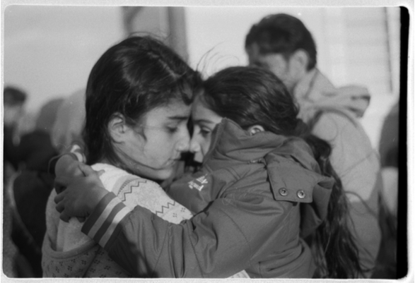
 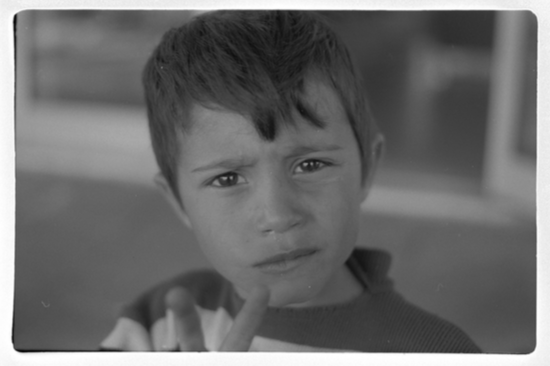
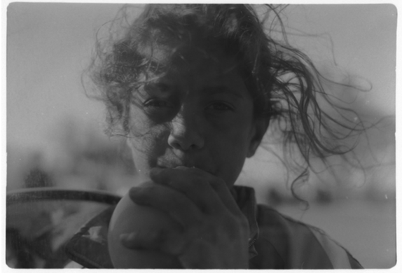
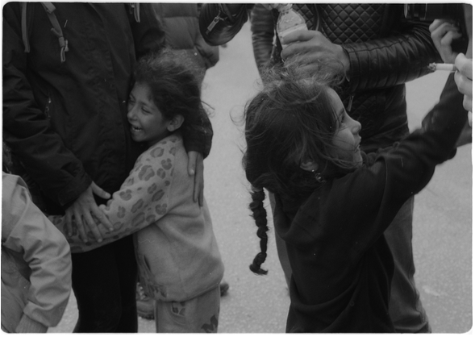
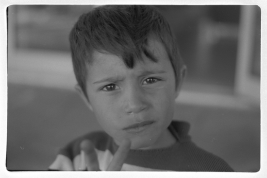
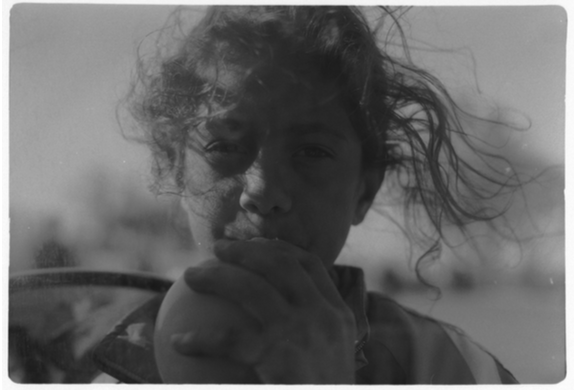
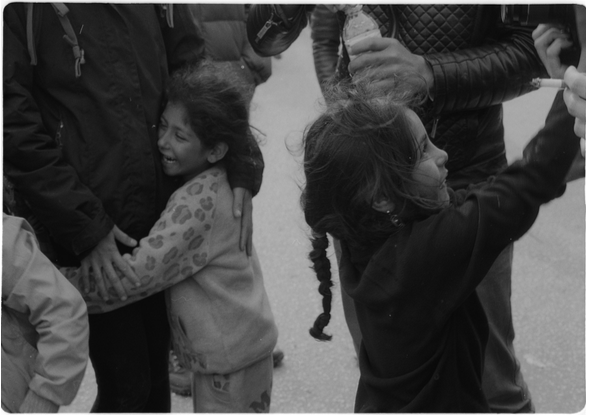
 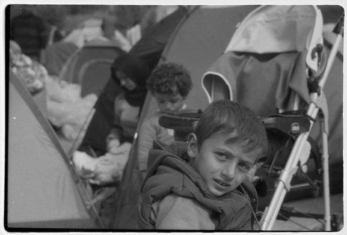
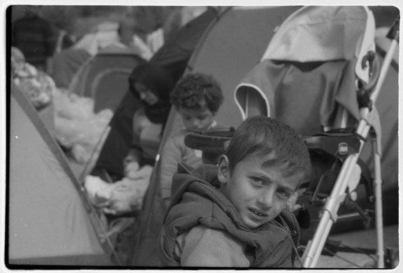